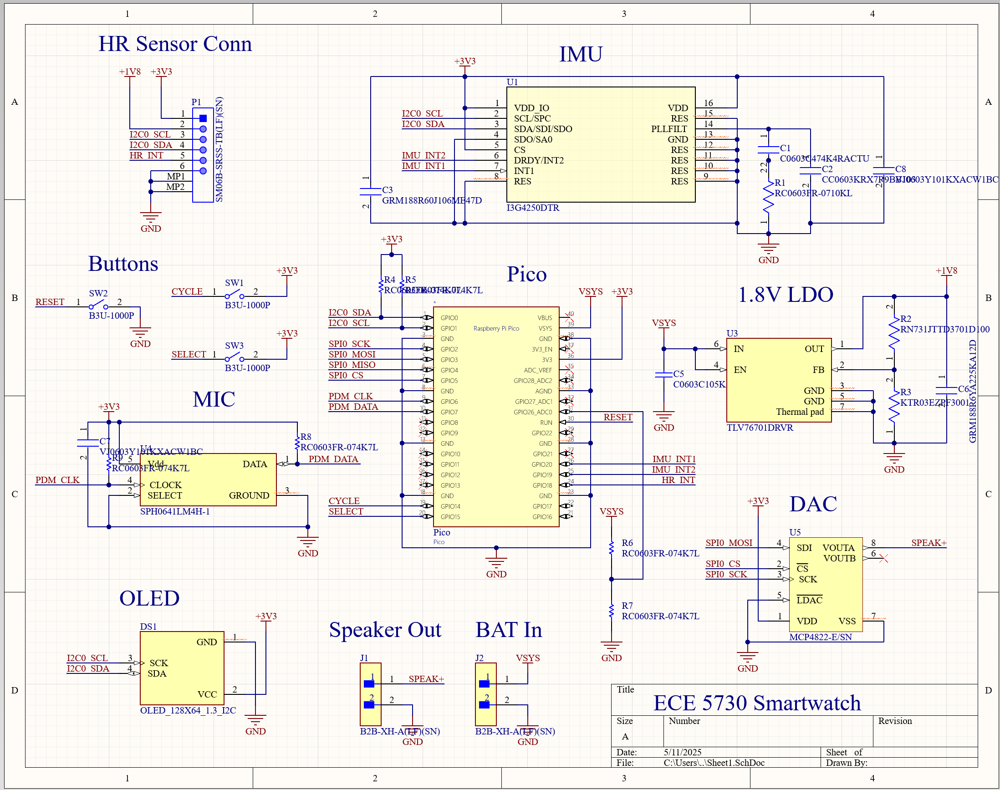
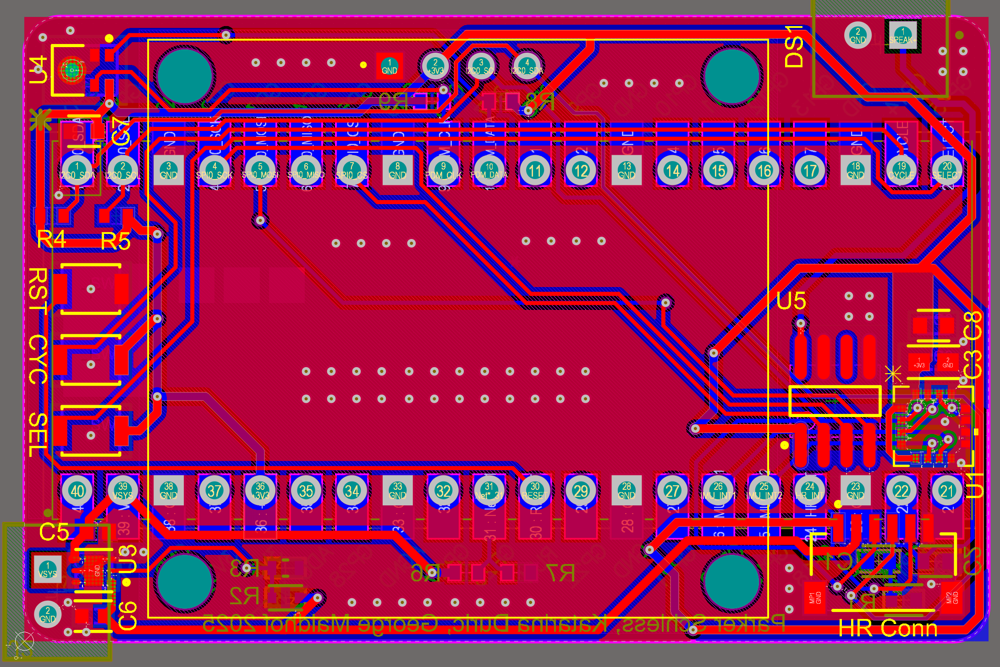
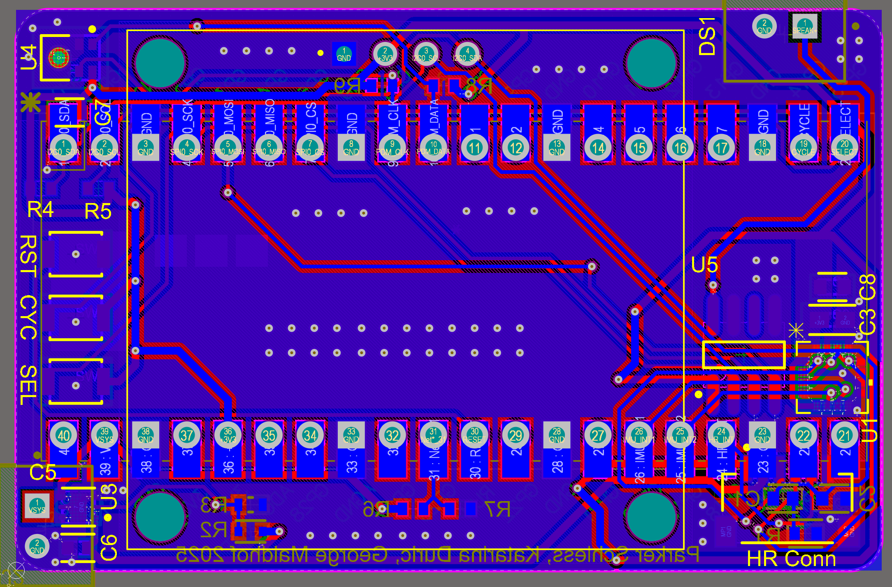
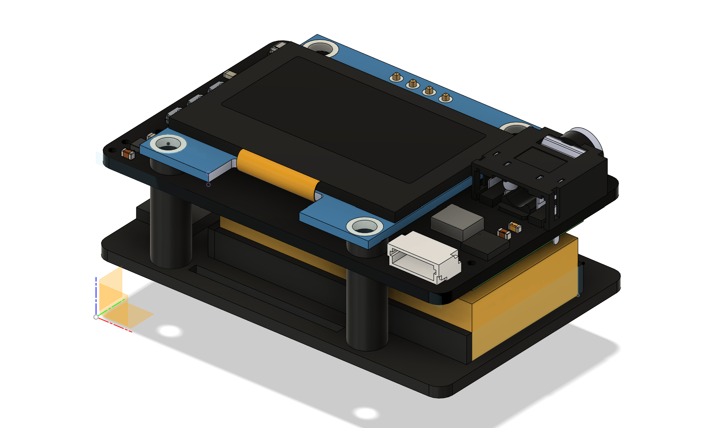
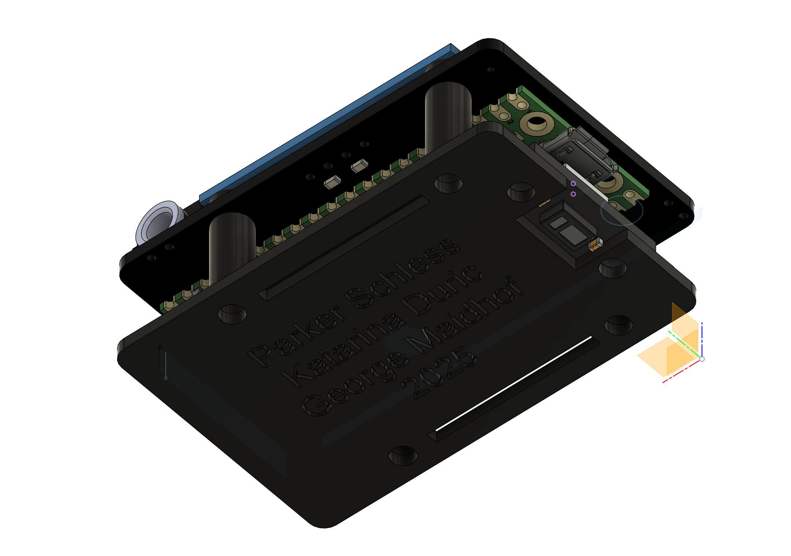
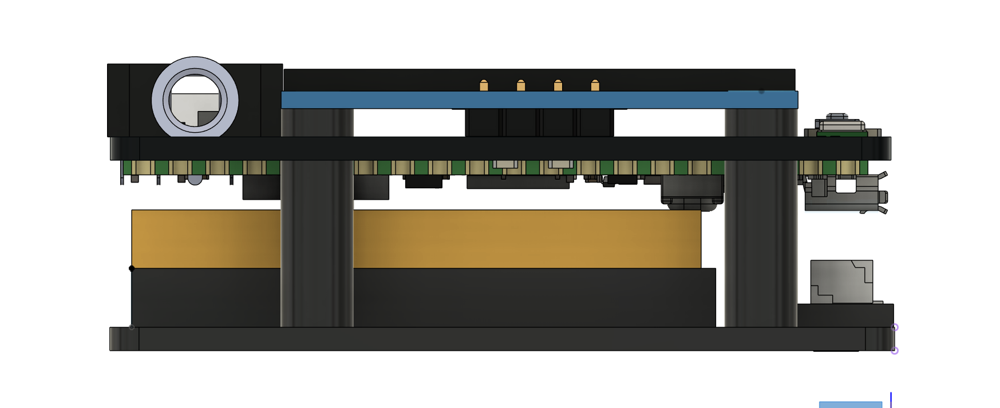

Results of Design
Summarize the findings and outcome of your project.

Intro here
High-level design here
Our hardware design is centered around our custom PCB built to house all components in as compact of a package as possible. This compactness was our driving design principle as we did not want our watch to be unwieldy on the wrist, and we were aiming to have a similar form factor as an Apple Watch. To do this, we considered the placement of the largest components first: the Pico W and the OLED screen. Specifically, we placed the Pico W lengthwise on the back of the PCB, and the OLED screen on the front. Incidentally, the mounting holes for the OLED screen fit just outside the width of the Pico W, meaning we did not have any issues with their bounding boxes colliding. We also placed these components based on the intended direction the watch was to be worn on the wrist, specifically so that a typical right-handed person who would wear a watch on their left wrist would see the screen in the correct orientation (so that we would not have to do any 180 degree flips in software) and Pico W's antenna would face outward from their wrist to have the best signal integrity. After placing these largest components, we placed the other smaller components in the voids remaining on the board. For the microphone and speaker, it was critical that they were on opposite sides of the board so as to not cause feedback issues, although this did not end up being an issue as we eventually replaced our tiny speaker with a standard 3.5mm headphone jack since the speaker was not suitable to be driven without an on-board amplifier. As such, the microphone was placed at the top left and the speaker/DAC output at the top right. Next, we placed the 1.8V LDO and LiPo connector on the bottom left of the board, and the 6-pin JST connector for the heart rate daughter board on the bottom right. For the heart rate sensor itself, we made a separate "daughter" board for it as well as the decoupling capacitors since it needs to press tightly against the skin in order to work properly, and this could not be accomplished if put on the main board. We also placed the DAC and IMU on the right side of the board, as well as the three buttons on the left side, with various decoupling capacitors and resistors placed in any spare locations on either side of the board.
  A Pico W was necessary for this build as we required WiFi for the network connection to obtain real time and incorporate texting abilities. The nominal 3.2V to 4.2V LiPo voltage is received on the VSYS pin of the Pico which in turn generates a constant 3.3V to be used by peripheral devices. Three buttons were also attached to Pico: a reset button used for resetting the main loop as well as sending the Pico to bootsel mode on a double press, as well as a select and cycle button used for control of the user interface. Additionally, we use a simple voltage divider to divide down the LiPo voltage to a range that fits within the 3.3V limit of the LDO such that we can use the voltage of the LiPo as a proxy for battery percentage in software.
An LDO (low-dropout regulator) is required to generate the 1.8V supply voltage for the heart rate sensor. We chose the TLV76701DRVR from Texas Instruments since the output voltage can be easily adjusted using a resistive divider. When using LDO's it is important to ensure the output voltage is sufficiently less than the input voltage, such that it satisfies the "dropout voltage," a parameter that defines the margin needed by the LDO to stabilize the output voltage generated from the input voltage. In this way, LDO's can only step down voltages, but are integrated in a much smaller package than buck converters which serve the same purpose.
To keep the cost of our device down, we chose a generic 128x64 OLED screen module using the common SSH1106 display driver. The screen is also quite compact with a 1.3" diagonal and thus a high PPI (pixels per inch) count for sharp text. It is also a graphics display as opposed to a character display, meaning any graphic can be easily displayed on the screen by writing to each individual pixel. This device operates at a standard 3.3V and communicates over I2C, making it ideal for this application.
We originally wanted to use the MPU6050 integrated IMU used in Lab 3, but found that the individual IC is no longer stocked at DigiKey. As such, we decided to use the I3G4250D angular rate sensor instead, which also has fewer pins than the MPU6050 making it ideal for soldering. While a traditional IMU incorporates both an accelerometer and gyroscope which can provide values for the actual orientation of the sensor in space at any given time, the angular rate sensor only detects changes in angle, meaning all X, Y, and Z values will be 0 in any orientation if the sensor is not rotating. This device operates at a standard 3.3V and communicates over I2C, making it ideal for this application.
We chose the MCP4822 DAC used from Lab 1 and Lab 2 to make it easier to develop software for it, given we could reuse a lot of our code from those previous labs. This device takes digital SPI signals from the Pico W and converts them into an analog output, suitable for driving some sort of audio output device. We originally intended to hook this up directly to a mini 8-ohm speaker, but found during testing that the DAC expected a high-impedance load such as a dedicated audio amplifier IC which we did not include on our PCB. However, including this amplifier IC would have caused a noticeable increase in PCB size as we would not have had space to fit it. Thus, we swapped the speaker for a standard 3.5mm headphone jack so that we could plug our own audio output device into the smartwatch. We envision a compact solution such as wired Apple EarPods as being plugged into the device which have their own audio amplifier and volume controller on-board. This also contributes to the discrete nature of the watch, as a loudspeaker may be too noticeable in typical use cases. This DAC communicates over a standard unidirectional 3-wire SPI interface from controller to peripheral only, making it ideal for small PCB's where routing space is limited.
Purely analog microphones are notoriously hard to get clean audio out of without significant DSP code, which would have surely eaten into our resources on the Pico W. Instead, we chose to use a digital microphone implementing the PDM (pulse density modulation) two-wire interface so that the Pico need only deal with digital signals from the microphone. Specifically, we chose the SPH0641LM4H-1 bottom-ported microphone due to its small size and bottom-facing port, meaning debris would not clog the hole had it been an upward-facing design. Such considerations are necessary for smartwatches given they are much more likely to face harsh conditions than, say, a laptop. The port is also ground-shielded around the perimeter, meaning it has good noise-reduction capabilities, again suitable for harsh conditions.
A fundamental feature of many modern smartwatches is the ability to measure heart rate. However, not all watches can also measure SPO2, or percent oxygen in the blood. Fortunately for us, Texas Instruments makes an all-in-one heart rate and SPO2 sensor in a compact package suitable for a smartwatch form factor called the MAX30102. This device works by incorporating red and IR LEDs that shine light onto the skin. A certain amount of this light gets absorbed by the blood based on how much volume is pumped through the veins. Photodetectors in the sensor measure the amount of light reflected back, which is inversely proportional to the amount of light absorbed. Using software algorithms, these reflected light readings can be translated into both a beats per minute reading as well as an SPO2 reading. The device requires a 1.8V nominal power supply from the LDO, a 3.3V LED driver power supply, and I2C connections to communicate with the host. All of these nets are run over the 6-pin JST connector that connects the main PCB to the heart rate daughter board.
Given our size constraints for our custom PCB, we needed to design a 3D-printable case that would mount the PCB, the LiPo battery, the heart rate daughter board together in one compact package while also allowing for cable management and holes for the nylon wrist straps. To do this, we utilized the four mounting holes of the screen as our main connecting structure for the entire "sandwich," running M2.5x20 screws through them and mounted to the underlying case through 3D-printed cylinders. The LiPo battery sits directly below the Pico W and was chosen to have a width less than the distance between the mounting cylinders. We also needed to make sure the Pico W USB port was easily accessible so we could program it. The heart rate sensor daughter board is mounted directly behind the battery using some M2.5x8 screws to secure it to the surface, whose depth was chosen so that the surface of the heart rate sensor would sit flush against the wrist. There is also ample room under the PCB for routing the LiPo and heart rate sensor cables so that they do not get in the way of normal operation. Rectangular slits are also lengthwise on the bottom surface where 1" wide nylon straps were mounted so that the watch could be worn on the wrist. A simple nylon clip design was also made to secure the strap in place when worn.
  Project specifications required our total unit cost to be under $125. We selected our parts using this as a guiding constraint. Even accounting for $15 worth of price slack for passive components, connectors, straps, hardware, etc., we are still well under the $125 budget constraint at just around $64 per smartwatch excluding shipping/customs for the custom PCBs.
| Part | Qty/Board | Unit Price ($) | Total Price ($) |
|---|---|---|---|
| Main PCB | 1 | 0.86 | 0.86 |
| Daughter PCB | 1 | 0.41 | 0.41 |
| Pi Pico W | 1 | 10.99 | 10.99 |
| OLED | 1 | 3.60 | 3.60 |
| 3.7V LiPo | 1 | 3.00 | 3.00 |
| Microphone | 1 | 1.06 | 1.06 |
| 3.5mm Jack | 1 | 1.02 | 1.02 |
| Heart Rate Sensor | 1 | 12.04 | 12.04 |
| Angular Rate Sensor | 1 | 8.89 | 8.89 |
| DAC | 1 | 3.97 | 3.97 |
| LDO | 1 | 0.32 | 0.32 |
| Buttons | 3 | 0.98 | 2.94 |
| Misc Passives | 1 | ~5.00 | 5.00 |
| Misc Connectors | 1 | ~5.00 | 5.00 |
| Misc Hardware | 1 | ~5.00 | 5.00 |
| Total | 64.10 | ||
Summarize the findings and outcome of your project.
Provide key takeaways and future improvements.